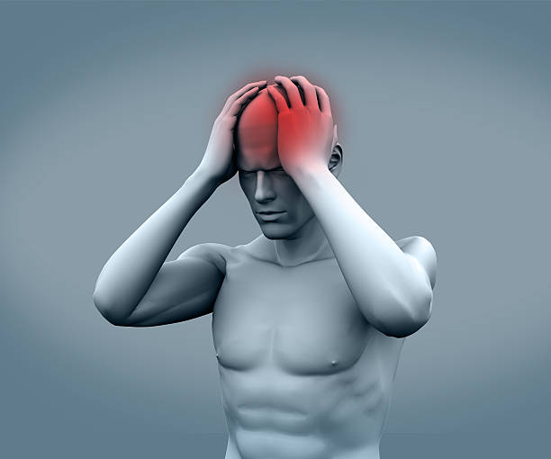
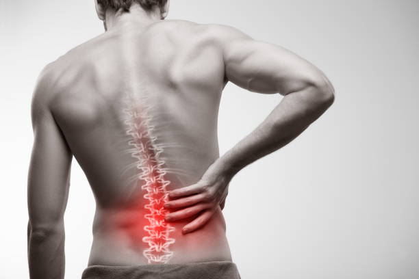
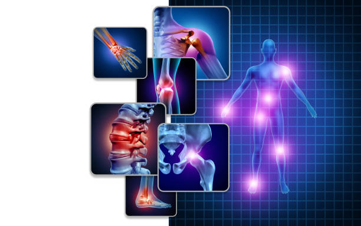
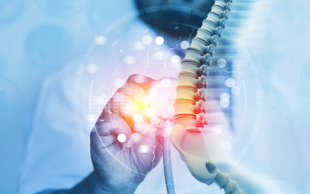
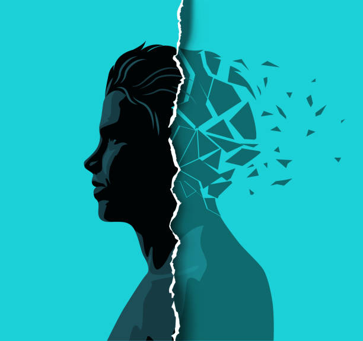
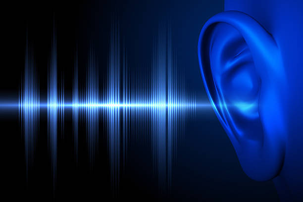

Дізнайтеся про передові методи лікування неврологічних захворювань, що ґрунтуються на сучасних медичних підходах та технологіях. Методики спрямовані на ефективне та індивідуалізоване лікування, враховуючи усі симптоми та підбираючи оптимальний лікувальний шлях для кожного пацієнта. Ми прагнемо досягти найкращих результатів для вашого здоров'я та благополуччя.
- 
-
Головний біль
Опис: Головний біль може приймати різні форми, від локалізованого дискомфорту до інтенсивних, пульсуючих болей. Часто може бути результатом стресу, напруги або мігрені.
Симптоми:
• Пульсуючий або тископодібний біль у голові.
• Світлочутливість або звукочутливість.
• Нудота або блювота.
• Загальне відчуття слабкості або дискомфорту.
- 
-
Біль у спині
Опис: Біль у спині може виникати з різних причин, таких як дискогенні розлади, радикулярні синдроми або артрит.
Симптоми:
• Локалізований або розповсюджений біль у спині.
• Обмеження руху.
• Втрата чутливості в деяких ділянках тіла.
• Відчуття слабкості у м'язах.
- 
-
Тілесний дискомфорт та біль
Опис: Дискомфорт та біль в тілі можуть бути результатом компресії нервів, ураження м'язів або суглобів.
Симптоми:
• Біль у верхніх та нижніх кінцівках.
• Деформація суглобів.
• Загальний дискомфорт по всьому тілу.
• Спазми м'язів.
- 
-
Лікування захворювання хребта
Опис: Захворювання хребта включають грижі дисків, спонділолістези та порушення постави.
Симптоми:
• Біль у спині.
• Обмеження руху.
• Неправильна постава.
• Відчуття слабкості у м'язах.
-
-
Судинні захворювання центральної нервової системи
Опис: Захворювання включають неврологічні ускладнення гіпертонічної хвороби, гіпертонічну ангіоенцефалопатію, хворобу Бінсвангера та порушення кровообігу у судинах голови та очей.
Симптоми:
• Головний біль.
• Зміни в зорі.
• Зміни в пам'яті та концентрації.
• Слабкість або оніміння у кінцівках.
-

-
Вегетативні судинні розлади
Опис: Вегетативні судинні розлади включають судинні кризи, артеріальну гіпертензію та гіпотензію, а також соматоформний розлад вегетативної нервової системи.
Симптоми:
• Підвищений або знижений кров'яний тиск.
• Часті пульсації.
• Постійне відчуття холоду або тепла в руках та ногах.
-
Координаторні порушення
Опис: Порушення включають головокружіння, запаморочення, хиткість центрального та периферичного типів, а також діагностику та лікування втрати свідомості
Симптоми:
• Постійний або періодичний головний біль.
• Нестійкість під час ходьби або руху.
• Труднощі у координації рухів.
• Відчуття, ніби "кружляє голова" або "крутиться земля".
- 
-
Психічні розлади
Опис: Психічні розлади можуть включати тривожні розлади, депресію та панічні атаки.
Симптоми:
• Постійний або періодичний стан тривоги.
• Погіршення настрою, сумнівність.
• Апатія, втрата інтересу до подій.
• Панічні атаки з раптовим виникненням страху або тривогою.
- 
-
Шум у вухах
Опис: Шум у вхах може бути спричинений різними факторами та мати різні прояви.
Симптоми:
• Постійний або періодичний шум, дзвін або шум у вухах.
• Погіршення слуху.
• Відчуття, ніби щось шумить або бринить у вухах.
• Поява шуму у вухах після фізичного чи емоційного напруження.